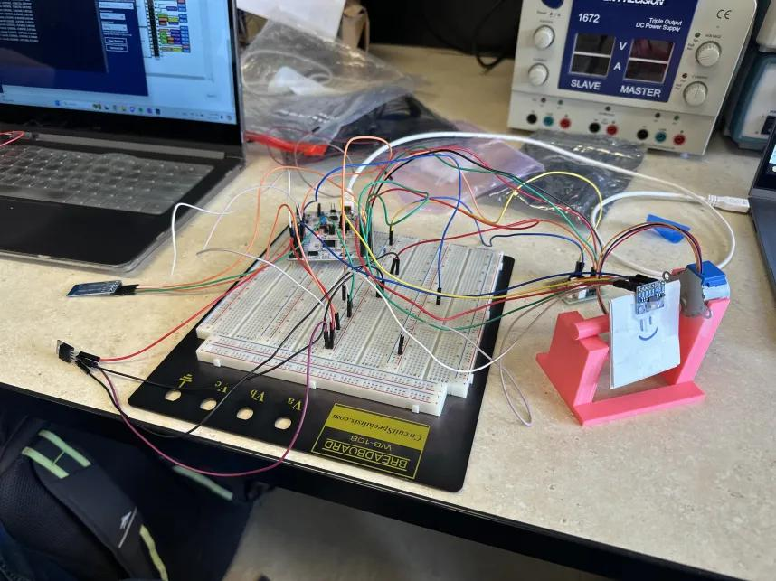
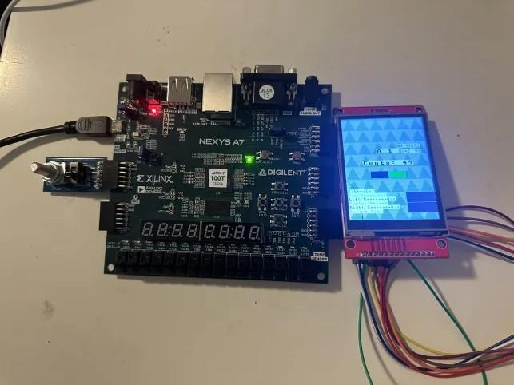
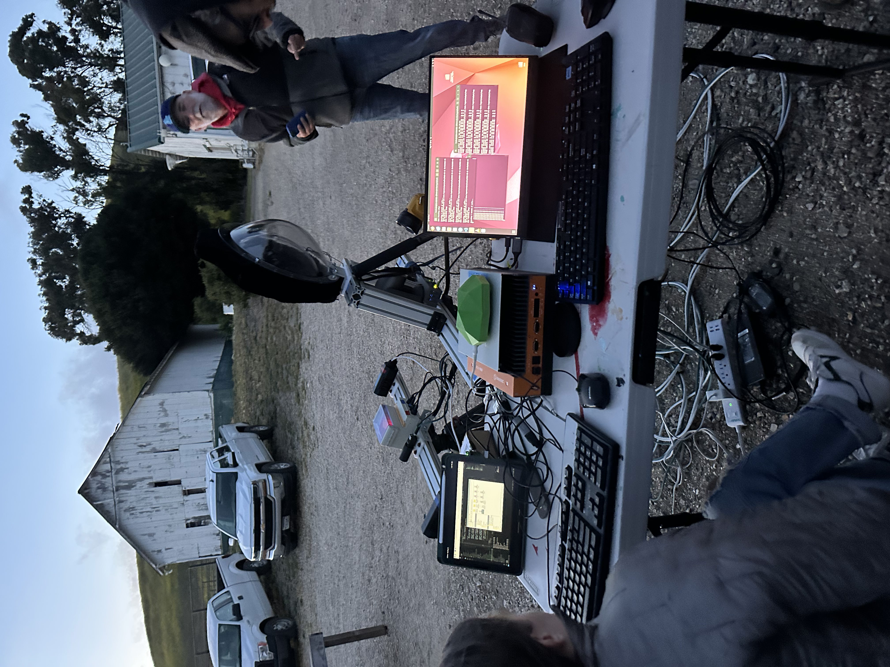

12/2025 — PRESENT
Applications Engineer
sixteen5hundred · Full-time
Creating lighting control layouts by leveraging the Acuity Brands Lighting nLight system for San Francisco Bay Area contractor clients.
Hey there! I'm Derek, an applications engineer with a computer engineering background who creates lighting control drawing layouts for the AEC industry. Welcome to my website.
I graduated from the University of California, Santa Barbara with a Bachelor of Science in computer engineering and a minor in Asian American studies.
My path is eclectic, with past and present experience spanning lighting controls, public works, biotechnology, asset management, website design, and administrative assistance. I have always approached the world as a sponge, absorbing what I can from the opportunities presented to me.
Though my career focus is in lighting, I'm always learning new things, trying out ideas, and taking in what the world has to offer. I believe the best engineering comes from staying curious.
Just a handful of chapters in my professional journey.
sixteen5hundred · Full-time
Creating lighting control layouts by leveraging the Acuity Brands Lighting nLight system for San Francisco Bay Area contractor clients.
City of Sausalito · Internship
Oversaw capital improvement projects, designed as-built and record drawing database, utilized AutoCAD for building mapping.
NeuroLeap Corp · Internship
Designed PCBs via OrCAD, referenced spec sheets to find components, worked alongside team to design IoT device to benefit children.
City of Goleta · Internship
Visited construction sites, designed automated billing system for road improvement projects, documented street furnitre with ArcGIS.
Friedman's Home Improvement · Part-time
Revised webnames of SKUs for physical store display, automated repetitive work in Excel using VBA macros.
Side projects, experiments, and solutions to interesting problems.

An STM32 programmed to utilize real time data from multiple sensors to control a motor.

An FPGA tuner able to identify frequencies by their note and if they are out of tune.

A field-tested product able to classify birds and bats by their calls and the direction the origin of the sound. Done in collaboration with UCSB and the company Sightir.
Some of my miscellaneous accomplishments and work. Did you know I was in a Melona commercial?
A published paper about Eco-coustic that was presented at the 2025 International Telemetry Conference in Las Vegas.
Serving as a commissioner for the City of Novato, advising on DEI initiatives. One success was the passing of Novato's first proclamation recognizing Filipino American History Month.
Danced itik itik and performed as a drummer at UCSB's 34th annual Filipino cultural performance. I was on the executive board that planned the performance as a logistics executive.
I'm always happy to connect with thoughtful people, discuss interesting problems, or explore what we could build together.
Say hello ↗